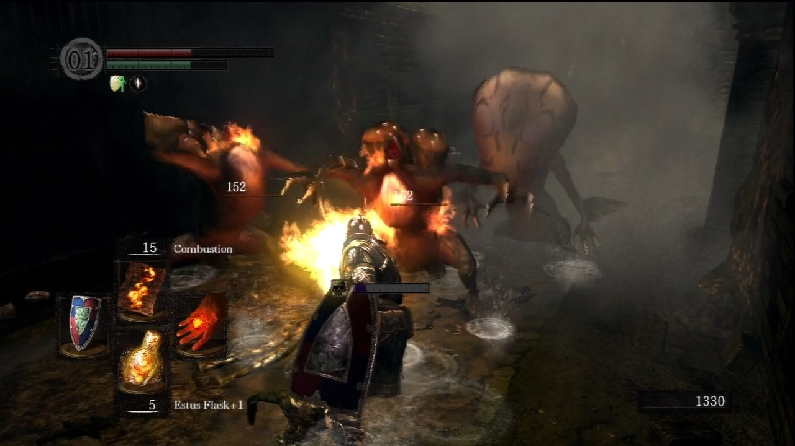
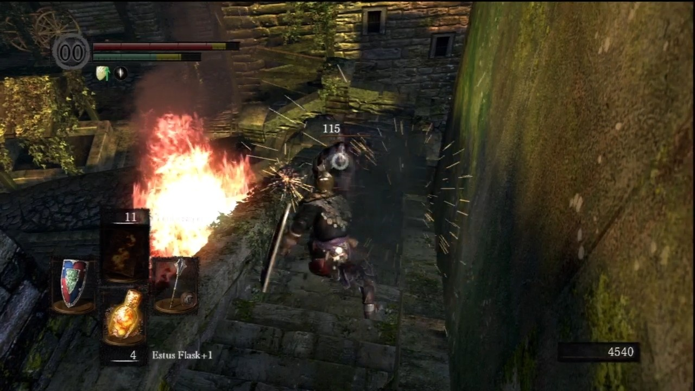

Last year, Dark Souls was released on consoles. A towering achievement, its treacherous, interconnected realms offered some of the most absorbing exploration a game has ever conjured, and its intense and grueling combat made victory against even the most common enemies a source of gratification and relief.
Now, this masterpiece has made its way to PC as the aptly titled Dark Souls: Prepare to Die Edition. This version adds a few new areas, improves on the console versions in one sense, and falls a bit short of its console counterparts in another.
But ultimately, this is the same incredible game that was released on consoles, and if you didn't have the option to play it then, you definitely shouldn't let this opportunity go unseized.
Dark Souls
You are undead, struggling to fight your way through the realms of Lordran on a quest whose final purpose is anything but clear. Where many games burden you with plot and background lore, Dark Souls lets the places you go tell their own kind of story, one lost in time and shrouded in mystery.
The stone ruins at Firelink Shrine, the overrun town known as the Undead Burg, the vast marble halls of Anor Londo--these all speak of a once-prosperous realm rich with history, and rather than spelling it out in detail, Dark Souls lets you wonder about what has dragged this land into its current state of miserable disrepair.
Item descriptions and brief conversations with non-player characters occasionally illuminate the smallest aspects of Lordran's past, and over time, you may piece together a reasonably fleshed-out picture of the crisis that has befallen the land. But you needn't concern yourself with these details if they don't interest you. The wondrous realms of Lordran are sure to seduce you whether you care to know their history or not.
Combat
From almost your earliest steps in this dangerous world, you're beset by enemies, and you quickly learn to never let your guard down. Even the most common and clumsy enemies you encounter have attacks that can make short work of you if you're not careful.
Melee combat is straightforward; there are no elaborate combos to learn, and Dark Souls certainly doesn't need them. With the small assortment of attacks, blocks, parries, and evasive maneuvers at your disposal, the combat in Dark Souls becomes a deadly dance in which each of your strikes that hits its target is a small victory and each potentially devastating attack from an enemy that you narrowly evade offers a new lease on life.
Just be aware that poorly implemented mouse and keyboard support makes playing the game that way much too unwieldy; the game demands a controller.Enemies
Each new area brings with it challenging new enemies, as varied and memorable in their designs as they are in their techniques.
Huge knights slumber in a forest, slowly and menacingly getting to their feet when you draw near. In the painted world of Ariamis, foul abominations with repulsive toxic sacs around their heads threaten to poison you when you deliver the killing blow. And you won't soon forget the first time you're cursed by the big-eyed basilisks of the depths, as your body becomes covered in a crystalline growth and you freeze in a pained gesture as death takes you.
 Poisonous frogs wanting to kill me? Great.Weapons
There's a wide variety of weapons to acquire and use, with each type offering a different fighting style. (Some swords are for swinging, and others are for thrusting, for example.)
There's also a good assortment of weapon enhancement options. As you progress and collect crafting items, you find that you can have a blacksmith make your weapons more powerful, and eventually imbue them with effects like lightning or fire. Finding a better weapon or making your existing weapon more powerful isn't just a matter of added convenience; it can be the difference between survival and failure.
And if you prefer to keep your distance from foes, bows and a diverse assortment of magic spells can be very effective, though you still need to frequently tangle with enemies in intense, close-quarters battles.
 Dogs? Nah. Demon dogs? Sure.Dork Souls
Dark Souls remains one of the greatest games of recent years. There's so much to do and to discover in its beautiful and frightening world. You might encounter and join one of nine covenants, each with its own benefits and agendas. You might find that one NPC has murdered another and that you can invade the killer's world as a spirit of vengeance.
The genius of Dark Souls isn't just in its environments, or its monsters, its thrilling combat, or the unusual and exciting ways in which players are connected. It's in the uncompromising way it throws conventional wisdom to the wind, dropping you into its dangerous world without guidance, making you fend for yourself, and teaching you to shrug off defeat time and time again to finally earn victory.